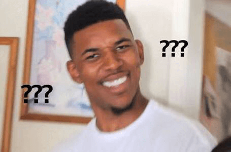
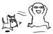

由于全新的静态博客系统已建成，新的Velas Talk迁移到blog.velas.xyz。以后的文章也将在上面发布。周知。
这个月干了啥？
貌似很久都没写过东西的说，八月来了，先冒个泡总结一下吧(●'◡'●)（感觉暑假也快结束了）
其实说起来这个月做的也不过是在啃JS红宝书而已，然后练练手写了一下瀑布流和JS的动画，这些都体现在网页最近几次更新上了。主要是这个月也挺忙的，又要学车又要帮人设计网页什么的，也只能插着空来学JS（看是真爱吧  ）
）
可能未来一段时间里面也只是默默研究JS为主，那是不是说就看不到这个网页会有大变化呢？
这样想的话就大错特错啦啊哈哈哈哈哈哈
看看最近两天的更新添加的动画是不是很惊喜呢！（不许说没有(￣ε(#￣)）看上去很普通的展开/关闭动画可是十分折腾人的。在设置动画之前只有开和关两个状态，但是加了动画之后就多了很多状况要考虑了……为此还把图片懒加载和整个Talk的结构又改了一遍_(:з)∠)_ 也希望你们看的时候能有眼前一亮的惊喜感啦。事实证明我之前一直低估了JS的作用，突然发现这货前途不可限量……
之所以最近Talk的文章更新的那么克制，是因为我意识到是时候要为这个网站接入一个后端了，静态网站写博客真的有点反人类……今天也对html做了一系列调整，真的是万事俱备只欠东风了。打算在下学期学数据库和操作系统的时候就开始搞一下node.js的东西，所以在那之前要加把劲巩固JS知识了(ง •_•)ง
其实接下来的路也有点不太明确，感觉自己在邻近一个分岔路口，到底是去搞node先呢还是搞框架先呢（虽然直觉告诉我是后者），但是今天看到一句话，大概意思是：不要给自己设限，你永远不知道自己有多厉害。所以就是有时间的话就多学习啦，趁着还年轻
八月份也要加油(ง •_•)ง
真的感觉暑假一眨眼就过了_(:з)∠)_
七月你好！
代嘎猴，我是你们最亲爱的Zeeeㄟ(◑皿◐ )ㄏ 嘎吒！！
有没有很想我呢！
我又滚回来啦啦啦啦啦啦啦啦・:*:・・:*:・ﾟ･*:.｡..｡.:*･ﾟ:*･ﾟﾟ+｡ ＼（*´･∀･｀*）／｡+ﾟﾟ･*:.｡..｡.:*･ﾟﾟ･*:.｡..｡.:*･ﾟ・:*:・・:*:・噗噗噗噗噗噗噗快把这个傻逼拖走ヽ(゜▽゜ )－C(/;◇;)/
咳嗯……不好意思，因为太兴奋了刚刚有点失态~ o(*￣▽￣*)o
说是因为考试月闭关了一个月，其实中间也有断断续续上来更新了几次，大家看看更新日志就知道我多勤奋啦啊哈哈哈。
而且这几次的更新也解决了几个从建站就一直有的顽固BUG：包括上一篇日志提到的在安卓浏览器上浏览时那个诡异的字体大小，终于定位到其实是Webkit的Font Boosting特性搞的鬼；还有实现了月份列表在所有新浏览器上都有毛玻璃效果。为自己点个赞，耶φ(゜▽゜*)♪
接下来这个月如无意外的话将继续学JS、jQuery、Ajax点点点点点，毕竟放暑假了，又有大把时间啦。网页设计的话要先告一段落啦，但是还是那句：每一天，在你看到或者看不到的地方，Velas都会变得比昨天更成熟一些，更精致一些。可能我正在你看不到的地方默默加油。
我们一起加油吧！
另：以后标题带这只小羊标记的都是一些偏私人风格的博客，纯技术交流的话不喜勿点。
六月，面倒くさい
只是一些乱七八糟的想法和苦水，并不是技术向博客，不喜勿点。
时间转眼就来到了六月份，在这几天做的事无非就是往日志和Talk这两个内容比较多的页面中加了月份的分类。毕竟以后随着日志越来越多，找东西会越来越麻烦，这个东西晚加不如早加，但是没想到工作量那么大。六月一来就遇到这样一个麻烦事，真的好麻烦。
在过去的一个月时间里，我看着这个小站从无到有，再到今天已具备了基本的模块，感触真的好大。不知不觉已经习惯了这些用代码画画的日子。但是说真的，这条前端的路越来越不好走了。当踏入JS的地盘，离开了之前学CSS满满都是成就感的日子后，现在的每一步都越来越不容易。
页面并看不出有什么大变化，因为外观都是CSS的功劳。目前的练手都是围绕着网页展开的，所以技能树基本都是乱点的，才发现自己在DOM上已经停留了好久了。用到现在突然发现最有用的东西是大一和大二上的时候学的那些基础课，但是那时怎么知道能在这些地方用到，大概也忘得七七八八了，现在又要重新捡起来。因为前端是自学的，有好多不懂的不知问谁，还老被人说前端不就是画个网页而已，自己看看书就会了，能有什么问题……听到都想打人。出了状况只能上搜索引擎或者上知乎搜。有类似的情况还好，但是如果没有的话头都大了。现在就碰到一个比较大的兼容性问题：安卓上的浏览器竖屏的时候p标签的字体大小比电脑上大了很多，但是当横屏以及在iOS浏览器上却没有这个问题。网上靠谱的解答一个都没有，-webkit-text-size-adjust也已经被禁用了好多年了，超头疼……
然而六月要准备各种考试了，这一块也要先收收手了。但是时间真的好紧迫啊，转眼就是大三狗了，想要找到好实习的话，要学的东西还是漫漫无边，能看见的还有jQ、CSS3、框架、Node.js……深知现在国内前端的风气是很浮躁的，用几个月时间背了一堆不明不白的东西赶春招的一大把。所以特地放慢了脚步，但是却又发现留给自己的时间已经不多了。
但是不管怎样，庆幸我到今天还是很喜欢自己做的这一切的，而且了解得越多，越是喜欢了。还有，要知道，哥可是网络工程专业的！哥还是搞设计出身的处女座！其实冥冥之中都是机缘巧合，推着我一直往前走。
所以不要心急，不要气馁。我们七月见！
关于Talk的月份列表
今天的Talk页增加了月份标签与月份列表，现在让我们来认识一下这两个小朋友吧。
其实在最初设计出来的时候，月份列表是长这样的
不能说不美观，但是当多看了几遍之后就会觉得那个灰色的条条横在中间有点影响看日志的食欲，而且在有一些地方也不符合这个网站的风格。冥想了一下之后，断然决定让之前那个被我吐槽的filter: blur回归，于是就有了今天这个样子
虽然感觉还有进步空间，但是能做到这样还是挺有成就感的。
目前filter: blur毛玻璃效果的兼容性列表如下（6月19日更新）：
- 测试已知可用的有：新版本的：Chrome、Firefox、Edge、iOS上的所有浏览器以及Android上的所有浏览器。
- 未测试但理论上兼容的有：新版本的：Opera、基于Webkit内核（或Blink内核）的浏览器（如：Safari、360浏览器等）、iOS 8（及以后版本）和Android 4.4（及以后版本）上的浏览器。
- 测试已知不兼容的有：IE全系列浏览器（IE11不兼容，推测旧版本的IE也不支持）、Opera Mini以及不支持CSS3的旧版本浏览器。在这些浏览器上月份列表背景为半透明的灰白色遮罩效果。
更新：Edge、Safari以及Android上的浏览器都兼容filter: blur，之前在Edge和Safari等浏览器上不能显示毛玻璃效果为实现方法出错。
现在在Talk页里调用了Echo.js库。这是一种图像延迟加载（懒加载）方法，用以提升页面的加载速度并节省流量。
以后如果你看到这只正在熟睡的比丢，请不要慌。这是懒加载成功运作、图片处于正在加载状态的标志。静静等到它睡醒，图片就加载完啦(●'◡'●)
另：懒加载这个名字配上这只比丢有种蜜汁萌点是什么鬼（误）
（误）这访问量是什么鬼
刚刚看了一下网站统计，发现点击量曲线走向有点诡异啊……（点开看图）
这个小网站那么多人来捧场其实我是很开心的，特别是在还没宣传出去的情况下（我也并没有这个打算）
但是谁能告诉我这个诡异的驼峰状走势是什么鬼……尤其是每到周四就点击量突增……我有点方……
独立访客量也是如此
并不是我自己点的，星期四最忙了我会说。
WebGL! WebGL!
前几天上游戏编程的时候听老师提了一下WebGL这个东西，大概就是利用JavaScript和OpenGL的一种3D绘图标准，可以用来弄含有3D元素的页面，甚至是3D网页游戏等等等等。而且现在绝大多数浏览器也已经支持这个标准了。
然后昨天我查了一下这个东西到底有多玄乎，结果又把我的三观刷新了一次。
在我印象中，提起网页游戏，我第一反应：不就是4399嘛
大不了就是这样
但是WebGL做的东西画风是这样的：
HelloRacer
- 方向键或WASD键控制赛车
- 回车键切换视角
- 空格键刹车
Materials Cars
WebGL Water
- 拖动小球或点击水面形成水波
- 拖动黑色空白区域改变视角
- G键切换有/无重力影响
- L键切换灯光（光源方向基于视角位置）
- 空格键暂停
更多WebGL实例 开源中国：15 个可在 Chrome 浏览器上体验 WebGL 的例子
简直就是美轮美奂好吗！听到显卡风扇呼呼转的时候真的好兴奋啊
然后又查了一下，现在很多的WebGL Demo都用了一个叫做Three.js的Javascript库，因为如果单纯调用WebGL的话代码量是十分恐怖的。
另：等我把JS弄懂了之后真想搞搞这个，过过我的游戏开发瘾
但是这货运行效率好像不太高（误），玩了一下显卡风扇转的好离谱，还有些卡……
奇怪的移动端
今天做了几件奇奇怪怪的事，其实不过是上课的时候开的脑洞而已——想把首页的背景固定，然后把filter: blur引到首页文本背景做个毛玻璃效果，这样就能有ios 7那种动态高斯模糊的效果了……想想都有点美
然而……并没有做出来
发现filter: blur原理是将整个div，包括里面的文字内容都给模糊了，而且并不能控制只是模糊背景图片，只能在背景的上面加一个div块，将背景继承给他再进行模糊……更不能忍的就是……模糊了之后还将边缘也一起模糊了
大概效果是这样：
EXCUSE ME????
算了，既然弄不了毛玻璃的话弄个透明也好，毕竟背景固定了之后文本背景加透明也挺萌的（好吧自我安慰）。
当我以为“今天的工作也大概到这里了吧”，准备开开心心玩儿去的时候，我无意中用手机打开……画风是这样的……
 嗯？
查了一下才知道移动端对background-attachment支持并不好，在size那里调了半天发现怎么都不太对。好咯，视觉效果优先，那只能移除咯……但是又舍不得pc那个视觉冲击力……然后狠下心，去研究了一下怎么用JS来针对移动端选择CSS。最后通过另外写一套mobile的CSS（顺便调了一下排版），再通过JS判断替换CSS文件，终于解决了……
还是很大快人心的……
但是如果以后要专门针对移动端适配的话……那不是每个页面都要写两套CSS？话说木有iPad的话那怎么做iPad上的测试？
另：明天开始动工收起按钮和留言板
好像图片库好久没理了吧
Markdown是个好东西！
借着Talk上线这个契机，我试了一下Markdown。因为想了想，觉得用HTML来写长文那画面有点太美。查了一些资料都在说Typora（我挺喜欢他的首页的）不错，所以也就用上了（主要是VS Code自带的Markdown不会用）。没想到刚刚将Markdown代码转换成HTML的时候，我的神经被冲击了一下。
在Markdown上看的代码是这样的：
还是挺直观的吧……
变成HTML之后是这样的：
……如果保留了CSS，你看到的将会是这样的：
注意左边的行号……
EXCUSE ME????
瞬间没了写东西的欲望好吗……
所以说即使在HTML繁荣发展的今天，Markdown的存在还是合理的……
另：Typora也是个好东西
今天！原来怎么都点不开的关于改名为新板块Talk上线啦，也就是说导航栏现在所有链接都可用了！强迫症患者看我多爱你们
以后所有的吐槽和段子（误）学习笔记终于有地方写了
其实每次最怕就是开新版面，因为一开版面就要想怎么设计，脑袋都大了……如果有个设计师帮忙设计多好，我是说不用包吃包住那种 
今天翻了翻更新日志，发现好久都没写过东西了。其实从某种意义上说，这个网站每天都有在更新的，只是都在实验室那边弄Javascript而已。每天改动都很大的，所以也懒得写日志了。不得不说Javascript真是一门很好的编程语言（主要是合我口味）。但是不得不说前端要走的路还有很长很长，冰封三尺非一日之寒。BTW，也顺路推销一下Javascript DOM编程艺术，它对JS入门来说真是一本不可多得的好书。
好啦，今天先写那么多。自从接触上JS就觉得做看得到的东西比看不到的东西简单（误），但是感觉每天都能学到新东西，真开心。
另：记第一次用Markdown写东西（误）